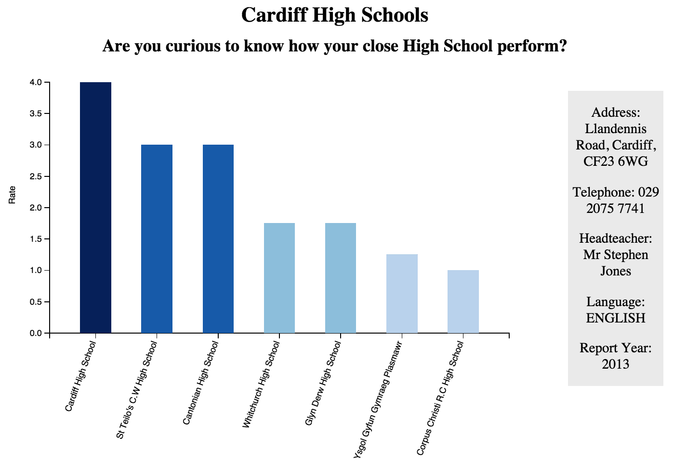
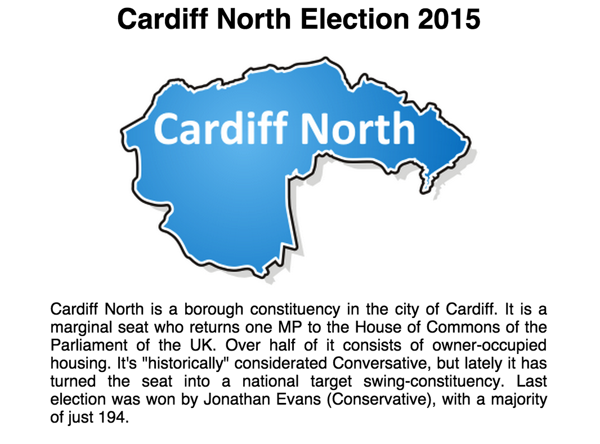
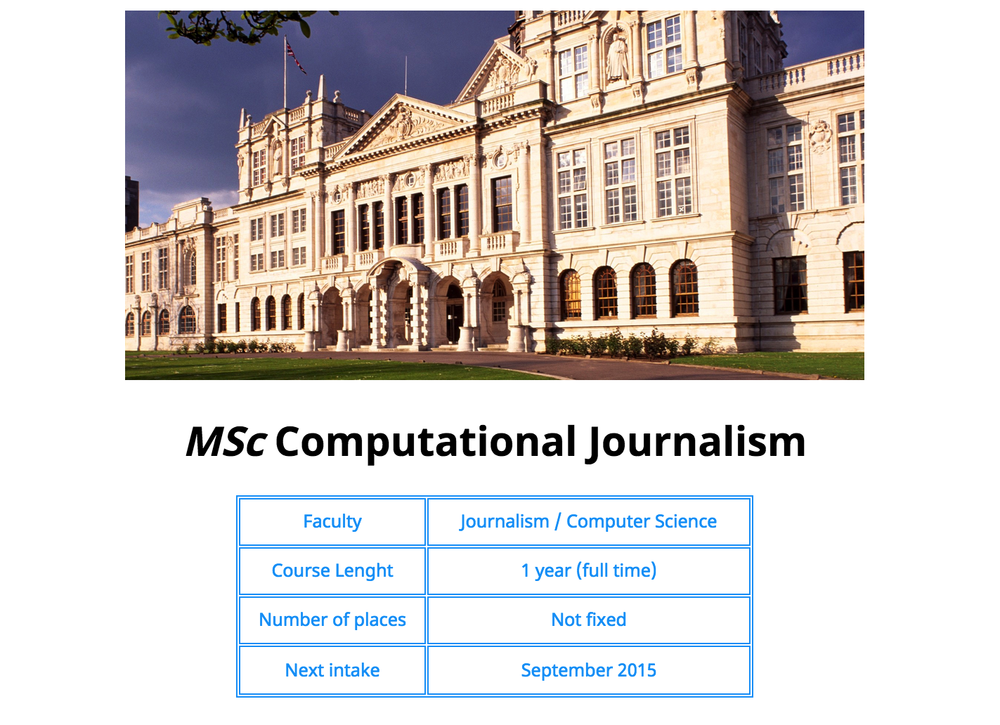

Portfolio
Recycling in Wales

Being very concerned about Recycling and sustainability issues, I created a data visualisation which gives a bit of a history of Wales' journey to getting "green". My intention was not only to show enthralling data but, above all, to create an insightful story which follows a logical thread.
For the visualisations, I enterily rely on using the Java Script library D3, while my data source was StatWales. This work involved researching a list of all the schools in the city from a reliable source, geo-locating them and finding the ones on our map using Python.
Cardiff High Schools
In this visualisations, I took into exam High schools within 2km to the Cardiff bus route 1/2. This work involved researching a list of all the schools in the city from a reliable source, geo-locating them and finding the ones I could attach to the 1/2 bus route map using Python. After that, I researched and downloaded each individual schools report from Estyn.com and I studied the parameters to use to carry on an evaluation of the schools. I eventually chose: Pupils’ outcome, Quality of the teaching, Care, support and guidance, Leadership and Management.
A problem I had to face was that old reports had a ranking 1-4, while the new ones 1-5; I overcame this issue creating a new ranking that could include both.
I also had to look up at every single report and manually collect the figures I needed, since all the documents were in a pdf format. This took me 3-4 hours of work.
To visualise schools’ performance, I had to calculate the average of the 4 criteria. I then used d3 to create the bar graph and I sorted it by descending order. I also provided a tooltip that allows the user to get general information about the school as address, telephone number, head teacher, language and report year.
In the end, I wrote an introductive paragraph to give a sort of background to the visualisation and I inserted a table – created with python since there were numerous data – to make my analysis clear and transparent.
I did a similar work for the Primary Schools.
Election Cardiff North
I searched and put together information about every single candidate in Cardiff North area: who they are, what they did so far. I also created three donut pie charts to show past results, these visualisations get smaller and smaller going back in time for a scenic effect. I used a tooltip and a legend inside the chart (which saves space on the page) to provide readers with further information such as percentage, candidates’ names and respectively party.
Music is my Radar (APIs)

This was my first attempt to use an API. Being a music lover, I decided to use three different APIs for this project which are Spotify, Band in Town and Google Maps. My intend was to create a sort of voyage of discovery of new music and potential gigs, for a possible music lover user like me. Everything starts by searching for an artists and the research can take you straight to interact with a map and looking for a particular venue! And if you don't believe it works, try to write a word like Nirvana!
My first website!
After only a month coding, back in November, following the so-called learning by doing method, I had to created my first website.
About me
Donec id elit non mi porta gravida at eget metus. Fusce dapibus, tellus ac cursus commodo, tortor mauris condimentum nibh, ut fermentum massa justo sit amet risus. Etiam porta sem malesuada magna mollis euismod. Donec sed odio dui.